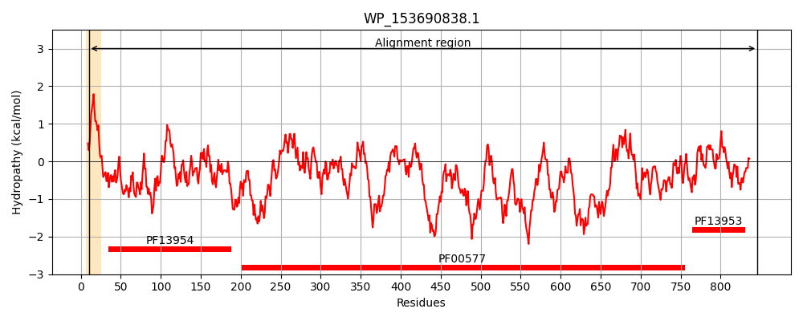
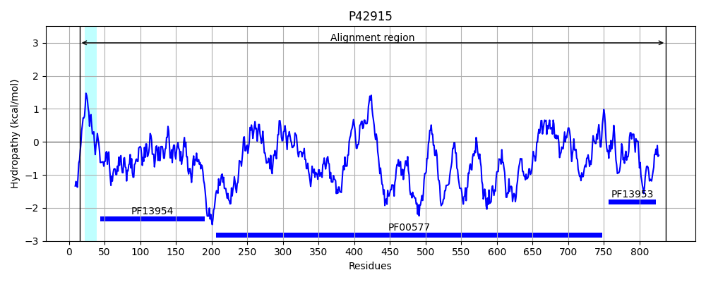
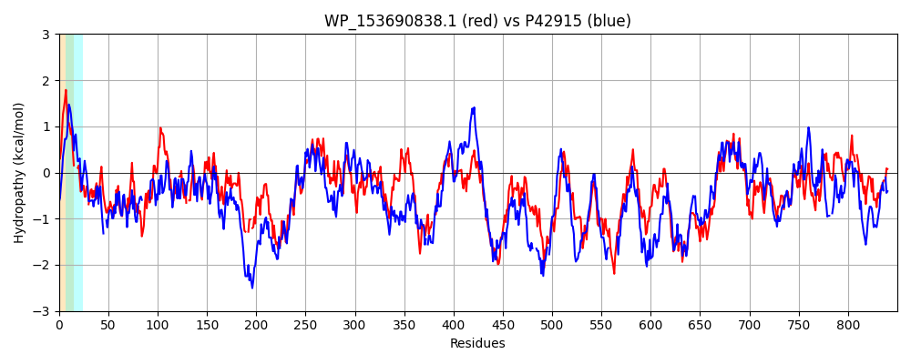

Hit Accession: P42915
Hit TCID: 1.B.11.3.6
Hit Description: gnl|BL_ORD_ID|10486 gnl|TC-DB|P42915|1.B.11.3.6 Uncharacterized outer membrane usher protein yraJ OS=Escherichia coli (strain K12) GN=yraJ PE=3 SV=1
Mach Len: 850
e:0.000000
Query TMS Count : 1
Hit TMS Count: 1
TMS-Overlap Score: 0.450000
Predicted Substrates:None
BLAST Alignment:
Score: 1533 , Bit scores: 595 bits, E-value: 0.0e+00, Alignment length: 850, Percentage identity: 39
Query: 10 KLSTIFLAMLPALLSG---LNNKAQARDF-FDPSFISSLNGSDPSTTPDLSVFQTQNAQAPGDYRVDIMFNGRYLDTRTIKFVANNRASSDNREPALVPCLSLKALAEYGVRIKAFPELAE-DQNGCANF--SVIPDTKADFDFTAQRLNISIPQAALSTTAQGYIPPDQFDDGINALLVNYQFSGSNDM--QAN-DEYYSLNLQSGLNVGPWRIRNLSTWNKNNGDAGDWDSAYLYMQRSIRPINSNLVMGESSSLSTIFDSVPFTGIQLATDTTMLPESMRGYAPIIRGIAKTNARVVIKQNGYQVYQTYVAPGAFEITDMYPSGGSGDLYVSVEESDGSKQEFVVPFATLPVMVRENQLEYEITSGKYRPYDGGVD--ETPFTQATATYGVSSSLTVYGGMQAASRYQALSTGLGYNLGELGAASADVTQAWSKMKDDEKTSGQSWRVRYGKNIVETGTNVTIAGYRYSTRGFNTLSEVLDSYSNDGNYSPRSLRNRTNLTVNQSLGKDLGSLSVSGLIEDYWDDKRTNKSISVGYNGGFRNVNYYLGYSYNRYTWSGDSSGKDAQDDQRITLTVTLPLSNWLPGTYTSYQLTNSNPGSTDQSVSIGGVGLDNDSLEWSLQQGYSNREYYSGDMRGTYNGARGSVNAGYSYDNNSQRIDYGANGSILAHADGITLGQDITDAAVLVKAPGLDNVRLANDNTISTDYRGYAIVPYVTPYRRTDITLDSTTLGEDMELPETTKSVVPTRGAIVRASYDGNIGQRAFVHLKTANGQDVPYGAMVLLAGNSKSQPSIVSDAGMVYMSGL-QQTGILNVQWGKSAAQQCNASFTLPAREGKATGISQIEAVC 846
+L+ I LP +L+G L A A ++ FDP + + +T DLS F + AQ PG Y+VDI N + + + I F AN E L P +++ L E G+++ P LAE D + N +IP T A+FDF Q+LN+SIPQ AL A+GY+ P ++DDGI L NY F+GS++ Q N + LN+Q+G N GPWR+RN STW +N+ W++ Y+QR I+ + S L++GES++ +IF S FTG+QLA+D MLP S RG+AP +RGIA ++A V I+QNGY +YQ+ V+ GAFEI D+YPS SGDL V++EESDG+++ F+ P+++LP+M R L+Y T+G+YR D D E F +ATA YG++++ T+YGG+ + Y AL G+G LG LGA S D+ +A ++ + G WR +Y K+I ET TN+ ++ YRY+ G+ + +E + + + +Y+ R ++ ++Q++ + SL SG +DYW + N++ISVG +G V Y L Y Y+RYT D +D+ ++L +++PL WLP + SYQ+T+ T + + G LD+ L +SL+Q + ++ + +Y G+ +AGYSY N+S + +YG G ++ H G+TL Q + +A L+ A G VR+ N I+TD GYA+VPY+T Y+ +++D+T L ++++L +TT+ VVP RGA+V A ++ NIG R V + NG+ +P+GA L + + Q SIV + G++Y+SG+ ++ V+WG A QQC +F+ P E T + Q A C
Sbjct: 15 QLALIIKRCLPMVLTGSGMLCTTANAEEYYFDPIMLETTKSGMQTT--DLSRFSKKYAQLPGTYQVDIWLNKKKVSQKKITFTAN-------AEQLLQPQFTVEQLRELGIKVDEIPALAEKDDDSVINSLEQIIPGTAAEFDFNHQQLNLSIPQIALYRDARGYVSPSRWDDGIPTLFTNYSFTGSDNRYRQGNRSQRQYLNMQNGANFGPWRLRNYSTWTRND-QTSSWNTISSYLQRDIKALKSQLLLGESATSGSIFSSYTFTGVQLASDDNMLPNSQRGFAPTVRGIANSSAIVTIRQNGYVIYQSNVSAGAFEINDLYPSSNSGDLEVTIEESDGTQRRFIQPYSSLPMMQRPGHLKYSATAGRYRA-DANSDSKEPEFAEATAIYGLNNTFTLYGGLLGSEDYYALGIGIGGTLGALGALSMDINRADTQFDNQHSFHGYQWRTQYIKDIPETNTNIAVSYYRYTNDGYFSFNE---ANTRNWDYNSRQ-KSEIQFNISQTIFDGV-SLYASGSQQDYWGNNDKNRNISVGVSGQQWGVGYSLNYQYSRYT--------DQNNDRALSLNLSIPLERWLPRSRVSYQMTSQKDRPTQHEMRLDGSLLDDGRLSYSLEQSLDDDNNHNSSLNASYRSPYGTFSAGYSYGNDSSQYNYGVTGGVVIHPHGVTLSQYLGNAFALIDANGASGVRIQNYPGIATDPFGYAVVPYLTTYQENRLSVDTTQLPDNVDLEQTTQFVVPNRGAMVAARFNANIGYRVLVTVSDRNGKPLPFGA--LASNDDTGQQSIVDEGGILYLSGISSKSQSWTVRWGNQADQQCQFAFSTPDSE-PTTSVLQGTAQC 837 | Protein Hydropathy Plots: |
|---|
|  |  |
Pairwise Alignment-Hydropathy Plot:
|
|---|
|  |